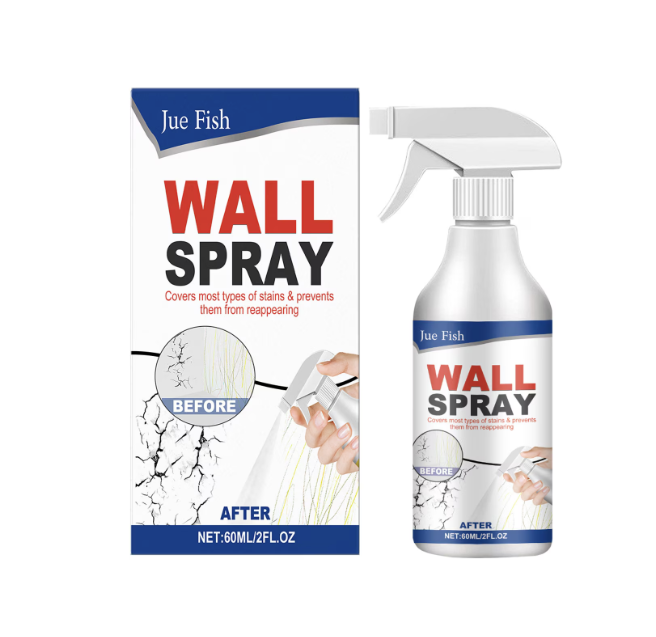

Spray Vopsea pentru Retușarea Pereților
Spray Jue Fish Wall Spray, 60 ml, pentru acoperirea vizuală a petelor și retușarea localizată a pereților interiori.
Preț B2B orientativ: 12,00 lei fără TVA (14,52 lei cu TVA 21%). Stoc declarat: 500 buc. Confirmă disponibilitatea și condițiile comerciale înainte de comandă.
DETALII PRODUS
Descriere
Spray-ul pentru retușarea pereților Jue Fish Wall Spray, 60 ml, este un produs destinat îmbunătățirii aspectului suprafețelor interioare prin acoperirea vizuală a petelor, urmelor de murdărie și a imperfecțiunilor superficiale. Formula este prezentată comercial ca o soluție practică pentru reîmprospătarea pereților, fiind concepută pentru intervenții localizate și lucrări de întreținere estetică a locuinței.
Capacitatea de acoperire a petelor reprezintă principala caracteristică a produsului. Spray-ul este promovat pentru mascarea diferitelor urme vizibile de pe pereți, inclusiv a decolorărilor și a zonelor cu aspect neuniform. Aplicarea urmărește obținerea unei suprafețe cu aspect mai curat și uniform, fără a necesita revopsirea integrală a încăperii.
Sistemul de pulverizare cu declanșator manual facilitează distribuirea produsului pe zonele care necesită retușare. Recipientul este prevăzut cu un cap pulverizator, conceput pentru orientarea soluției către suprafața vizată. Acest format permite efectuarea unor intervenții punctuale, în funcție de dimensiunea imperfecțiunilor și de compatibilitatea materialului suport.
Produsul este prezentat comercial și pentru acoperirea urmelor asociate umezelii și petelor persistente. Imaginile de prezentare evidențiază suprafețe cu decolorări și zone afectate vizual de murdărie. Spray-ul poate fi utilizat pentru retușuri estetice după curățarea și pregătirea corespunzătoare a suprafeței. Acesta nu înlocuiește tratamentele împotriva mucegaiului, remedierea infiltrațiilor sau reparațiile structurale ale pereților.
Un avantaj al formatului de 60 ml îl reprezintă posibilitatea efectuării unor lucrări de întreținere localizate. Recipientul compact permite depozitarea și transportul facil, fiind potrivit pentru păstrarea alături de alte accesorii destinate reparațiilor cosmetice și întreținerii spațiilor interioare.
Finisajul deschis la culoare, prezentat în materialele comerciale, este destinat uniformizării vizuale a pereților. Rezultatul final poate varia în funcție de culoarea inițială a suprafeței, gradul de absorbție, natura petelor și numărul de aplicări. Compatibilitatea și nuanța efectivă trebuie verificate înainte de utilizare.
Ambalajul individual include un recipient cu pulverizator și o cutie de prezentare, în nuanțe de alb, albastru și roșu. Designul evidențiază denumirea Jue Fish Wall Spray și utilizează ilustrații comparative de tip înainte și după, pentru prezentarea destinației comerciale a produsului.
Din perspectiva distribuției B2B, spray-ul Jue Fish Wall Spray reprezintă o opțiune pentru magazinele de bricolaj, distribuitorii en-gros, comercianții de produse pentru întreținerea locuinței și platformele marketplace. Formatul de 60 ml și utilizarea pentru retușuri localizate permit integrarea produsului în portofolii dedicate amenajărilor interioare, renovărilor cosmetice și accesoriilor pentru întreținerea pereților.
Caracteristici principale
- Spray pentru retușarea pereților: produs destinat îmbunătățirii aspectului suprafețelor interioare.
- Capacitate de 60 ml: recipient compact, potrivit pentru intervenții localizate.
- Acoperirea vizuală a petelor: conceput pentru mascarea urmelor și decolorărilor superficiale.
- Uniformizarea aspectului pereților: contribuie la obținerea unui finisaj vizual mai îngrijit.
- Sistem de pulverizare: aplicator manual prevăzut cu declanșator.
- Aplicare localizată: permite direcționarea produsului către zonele care necesită retușuri.
- Întreținerea suprafețelor interioare: destinat completării lucrărilor cosmetice de renovare.
- Mascarea imperfecțiunilor: produs promovat pentru acoperirea petelor și a zonelor cu aspect neuniform.
- Finisaj deschis la culoare: prezentat comercial pentru retușarea suprafețelor deschise, cu verificarea nuanței înainte de aplicare.
- Utilizare fără echipamente electrice: pulverizarea se realizează manual.
- Format portabil: recipient ușor de depozitat și transportat.
- Aplicator integrat: nu necesită pensulă sau trafalet pentru pulverizare.
- Îngrijirea estetică a pereților: conceput pentru reîmprospătarea vizuală a suprafețelor compatibile.
- Ambalaj individual: potrivit pentru prezentarea și comercializarea în magazine fizice și online.
- Design comercial distinctiv: cutie albă și albastră cu ilustrații comparative.
- Brand Jue Fish: produs comercializat sub denumirea Wall Spray.
- Utilizare pentru interior: destinat retușării suprafețelor compatibile, conform instrucțiunilor producătorului.
Recomandări de utilizare: Înainte de aplicare, suprafața trebuie să fie curată, uscată și pregătită corespunzător. Se recomandă testarea produsului pe o zonă puțin vizibilă. În cazul petelor provocate de infiltrații sau mucegai, cauza trebuie remediată înainte de efectuarea retușurilor. Eficiența acoperirii și rezistența finisajului depind de caracteristicile formulei și ale suprafeței tratate.
Comandă și informații
Site-ul funcționează ca un catalog B2B. Nu există plată online sau coș de cumpărături. Stoc declarat: 500 buc. Confirmă disponibilitatea înainte de comandă.
Discută pe WhatsApp →DIN ACEEAȘI CATEGORIE